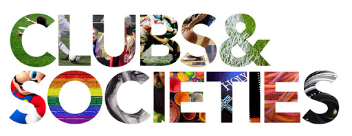

CAMPUS LIFE
SMART CLASSROOMS
Classrooms of TMSP
Classrooms are installed with furniture which allows students to be comfortable. They are optimally lit, and fully air-conditioned. Each classroom is well equipped with the newest quality of study furniture, racks, pegs, pigeon-holes and many more features for the children to stack up their required study and activity material..
TABLES AND BENCHES
All the furniture:
The tables and benches are carefully carpentered to ensure that the edges are round and smooth so as to not hurt the children. It has further been ensured that the furniture is comfortable enough to keep the child’s posture straight and upright..
SECURITY
There is proper security..
TMS Patiala has a big boundary wall, two security guards with one supervisor of security. In every Pre Primary class room there is a maid for the help of students. Strict rules are established for attendance in bus and school.
MEDICAL FACILITIES
Infirmary
The School has an airy, well ventilated, well kept room with beds and basic medical facilities A full time qualified nurse is present to help the students in pain and distress during the school time. The clinic can handle situations by providing immediate relief in the form of first-aid. Apart from this it also conducts regular medical check-up of the students and maintains health cards
SAFETY
CHECK THE SAFETY:
Adequate fire safety measures have been taken in the school, and mock fire drills are conducted at fixed intervals. Apart from the supervision and security staff, all the teachers are also trained to handle emergency and fire equipments.
SAFETY
CHECK THE SAFETY:
Adequate fire safety measures have been taken in the school, and mock fire drills are conducted at fixed intervals. Apart from the supervision and security staff, all the teachers are also trained to handle emergency and fire equipments.
TRANSPORT
BUSES
Air Conditioned School Transport equipped with speed governing system. Drivers are well experienced. School transport is available from Patiala and adjoining villages .School transport also available from Samana, Nabha, Rajpura and nearby areas of the school. Every bus has a conductor and a maid to supervise the students.
SCHOLASTICS
Curriculm for TMSP
While the Indian education system concentrates on loading as much information as possible in the minds of the students, it rarely enables the teachers to draw out their inherent potential. The change was needed to stop teachers from directing and feeding in answers in the minds of the learners; to bring about a paradigm shift by getting the teachers to become facilitators of knowledge; and to help the learners to extract solutions, question preset theories and be responsive and adaptable. Thus, a unique pedagogy had to be built to fulfill this vision and philosophy. Another factor to be kept in mind is that children need to become equipped with 21st century skills, social and emotional skills while developing themselves in areas they have talent in. They need to be proficient in creative and critical thinking, analysis, reasoning, problem solving, synthesis, data handling, applying their learning, and presentation skills. They need the best pedagogic practices, the latest technological tools and liberation from the tyranny of rote learning. At the end of the years of schooling, the confident and responsible person that needs to emerge out of the school system requires careful nurturing. Thus, the system needs to be given opportunities to build values unconsciously in the minds of the child so s/he becomes an asset to society and becomes a harbinger of progress.
Cnetral Board of Secondary Education
Central Board of Secondary Education (CBSE) is a Board of Education for public and private schools under the Union Government of India. he Central Board of Secondary Education (CBSE) established in the year 1929, enjoys today the distinction of being one of the oldest and largest Board of Secondary Education in India. The prime focus of the Board is on: The CBSE envisions a robust, vibrant and holistic school education that will engender excellence in every sphere of human endeavour. The Board is committed to provide quality education to promote intellectual, social and cultural vivacity among it’s learners. It works toward evolving a learning process and environment, which empowers the future citizens to become global leader in the emerging knowledge society Innovations in teaching-learning methodologies by devising student-friendly and student-centred paradigms Reforms in examinations and evaluation practices Skill-based learning by adding job-oriented and job-linked inputs Regularly updating the pedagogical skills of the teachers and administrators by conducting in service training programmes, workshops etc. Assessment for CBSE classes is based on the Continuous and Comprehensive Evaluation system

Subjects offered in TMSP
English
Second language: French / Hindi
Third language: French / Hindi / Sanskrit (for Classes 6 to 8 only)
Mathematics
Science
Social Science

CBSE of big classes
CBSE offers Classes 11 and 12 with total term duration of two years. The course culminates with Class 12 CBSE Board Examinations in the month of March. Students have to appear for examinations in five (5) subjects including one language, i.e. English
The Millenium Learning system
The Millennium Learning System (MLS) is an age appropriate learning system that caters to the psychological, emotional and cognitive needs of the learner.
It has different levels based on developmental milestones and age appropriate pedagogy.
The Millenium Learning system - Image
How is MLS implemented?
The curriculum in the Millennium Schools is powered by the Millennium Learning SystemTM. Every tangible for MLS has been developed at the Research and Development Division of Education Quality Foundation of India, with a focused outcome in mind. This outcome is clearly understood through our vision for every child who enters the system. Age appropriate, psychologically mapped and pedagogically apt tangibles are used at every level of the Millennium Learning System. Some of these are the books, the assessment system and the lesson plans.
Books of TMSP
The personalized dictionary, concept books, project books, follow up journals, apprentice manuals, explorer’s quest and portfolios are all designed to help in the process of building relevant skills. Learners’ creativity, data handling skills and presentation skills are automatically built along with social and emotional skills as they learn through collaboration and peer interaction.
Class rooms that resound with the joy of learning
Suitable support and training ensures that the facilitators are empowered to create a motivating atmosphere. The classrooms become vibrant with the process of teaching-learning. The overall effect is not just a passive transfer of information, but lively, interactive and enjoyable sessions where the learners develop confidence and build skills as they understand and apply the knowledge by connecting it to their daily life.
ASSESSMENTS
Assessments are a very important part of the curriculum of the Millennium Learning system. It aids to bring up the skill levels of each learner. A system of regular Formative Assessments and Summative Assessments help achieve this.
SCHOOL LIFE
-
Overview
IT'S NOT JUST ABOUT ACADEMICS The Millennium School (TMS) believes there is more to life than academic success. We actively uphold a balanced approach to education; one that develops students who excel both inside and outside the classroom. We believe that learning is a lifelong process that occurs both in and out of the classroom.
We prepare students for the new and emerging challenges of the 21st century. Life at TMS includes just about everything that you do during your years here as a student from academics to sports, from drama to travel. Each child is encouraged to take part in of co-curricular activities, enabling him to spread his wings wider. We offer a diverse range of activities, from experiential learning programs to numerous athletics endeavors, arts experiences, and student activities and clubs.
Four major domains of talent development laid out by the Millennium Learning SystemTM (MLS) are:
Intellectual abilities: Encompassing the areas of language, mathematics and science, intellectual ability development including reading, writing and oral communication, traditional and applied mathematics, space programs, robotics, inventions, forensic skills and other inspiring learning projects.
Creative abilities: Covering confidence building and mind-expanding project areas such as Indian and world vocal and instrumental music, dance, drama, photography, painting and sculpture.
Physical and Mental abilities: Offering a variety of physical and mental activities for a healthy young mind and body including yoga, athletics, team sports, adventure sports and chess.
Social abilities: To enable each child to improve his interactions with classmates, teachers and parents, there are various projects which deal with concepts such as development of leadership qualities, problem solving abilities and interpersonal communication.
We also encourage students from an early age to take responsibility for their community. Students contribute to decision-making in the school through student councils. Activities involving the wider community generally focus on developing a sense of responsibility for the common good.
The school runs a house system. Every student belongs to one of four houses. Within their houses students take positions of responsibility, compete against other houses in sport and music and work towards common goals in a range of areas.
Thoughtful and motivated counselors, teachers, and administrators work with students and their families to ensure that all students have the opportunity to reach their full potential at TMS.
-
Sports
Physical activities play an essential role in the holistic development of students. It not only keeps them fit but fosters to their physical, social and emotional health. Along with catering to their physical and mental fitness it teaches them group commitment, team work, individual discipline and helps them create an apt attitude towards life in general.
We, at The Millennium School, firmly believe in all round development of our students and thus we emphasize equally on both academics and co-curricular activities. We envisage a system which aims at a multifaceted flowering of the child's physical, emotional, mental and spiritual personality.
Well structured sports program and modified games guided by expert coaches at The Millennium School helps children develop fundamental movement skills and develop gross motor skills exclusively for the pre-primary kids. To ensure regular participation of students in different sports, we have made games curriculum a part of our educational process.
The games offered are:
Taekwon-do, Table Tennis, Basket Ball, Badminton, Volleyball, Hockey, Croquet, Football, Cricket, Skating, Archery -
Music and Dance
The Millennium School provides training in a variety of disciplines in music and dance which the children have freedom to choose from. They can opt for Indian Classical- Kathak , Bharatnatyam, Odissi, Indian folk , Western dance and fusion. The musical instruments include drums, tabla, pakhwaj, congo, dholak, naal, bongo, guitar, sitar, violin, santoor, sarod, xylophone, harmonium and Casio synthesizer. In vocal there are Western, Hindustani classical and light fusion to choose from. The school has dedicated and gifted teachers in the faculty to ignite and sustain the creative spark in the students. The universal language of music and dance forms helps students from across communities to bond and provides the perfect nutriment for the mind, body and soul.
-
Creative Arts
The Millennium Schools’ Art and Craft program connects creativity and innovation at an early stage of children’s development. The program is designed to build skills, develop competencies and provide resources that support creative learning for our students. Most importantly, it gives children the chance to use their imagination.
Drawing, Painting, Craft, Origami, Photography, Creative writing, Calligraphy, Candle Making are some of the activities included in the program. -
Theatre
Theatre enables the development and understanding of the self as well as the exploration of self in relation to others. It helps the development of critical empathy for fellow humans and towards the natural, physical and social worlds.
Through theatre/street-plays students are given opportunity to create their own dramas and attend plays presented by others also bringing about social awareness through street-plays. Through this medium of learning, students are transported to worlds past, present, and future --- the ultimate in "virtual reality."
“Theatre not only includes acting, it also involves dance, painting, costume designing, stage designing, an understanding of lighting and other things." At The Millennium School drama fulfils student's psychological needs of free expression and imagination, builds their characters, and finally through stories leads them to perform for an audience.
-
Clubs and Societes
TMS Patiala has the following clubs and societies :Red Cross, Calligraphy, Carpentry, Cookery, Clay Modelling / Pottery, Gardening, Painting, Music , Art & Craft, Animation, Mountaneering, Photography, Astronomy, House-Keeping, Ecology, Traffic awareness club.
-
Educational Trips & Excursions
An annual excursion is organized for students for every academic session. Further, the school organizes planned visits to various places to enrich the students and to take learning beyond the four walls of the classroom.
The Millennium school believes very strongly in the educational value of well planned visits and is a firm supporter of outdoor education. An educational trip is an off-campus learning activity that brings excitement and adventure to learning. A well planned field trip is an ideal way to introduce new skills and concepts to children, reinforce ongoing lessons and influence the learning potential. The school outings are driven by:
• Curriculum
• Life Skills
• Outdoor leadership skills
Educations trips & Excursions:
• To Govt. Sen. Sec. School, Faggan Majra for Project on Loan
• Easy Day Supermarket, Patiala city for Money Management Project
• Aakashwani Patiala Radio Station, Urban Estate Patiala
• Visit to Hotel Taj, Chandigarh & Pearl Institute of Hotel management
• Hotel Iqbal Inn, Patiala
• Zamindara Agro, Rauni
• 'Sai Vridh Aashram' an Oldage Home, Patiala
• Visit to ‘Sanghol’
• To Jim Corbett National Park
• To Govt. Sen. Sec. School, Faggan Majra
• Gurudwara Shri Anandpur Sahib & Virasat-E-Khalsa, Anandpur Sahib
• Excursion to the Railway Station
• Kila Raipur Games, Ludhiana
• Horse Show, Chandigarh
• Chattbir Zoo, Banur
• Traffic Awareness Drive, Patiala
• Urban Estate, Marketplace
• Principal's Residence
• Aastha Center, Patiala
• Trip to Garry Farms, Nanoki (Nabha)
-
Workshops
A number of workshops are conducted on a regular basis, so as to tap the creativity of the children at Millennium.
Workshops include:
1. Annual Parenting Workshop on "Make A Special Relationship Better With Love and Logic” by the Principal.
2. PTMs
3. Open house interactions with the staff and the parents.
4. Orientations.
5. Creative and performing Arts
Hobby Clubs: Dramatics, Music, Art & Craft, Dance, Martial Art, Carpentry, Photography, Mountaineering, Cookery, Ecology, Pottery, Needle work, First Aid, House keeping, Calligraphy, Animation
-
Social Outreach
The Millennium Social Experience program aims to blend a comprehensive classroom teaching program with a variety of community oriented activities. This provides students with abundant opportunities for enriching personal growth, enhanced civic awareness, and a progressive global outlook. Classroom teaching focuses on diverse topics like climate change, child labour, tribal culture , the digital divide, animal rights, deforestation, women's issues, through seminars, video presentations, "take a stand" activities, story-telling, “prabhat pheris” and lectures. The emphasis is on sustainability and empowerment. Students are encouraged to develop an approach of mutual and reciprocal interaction with the community.